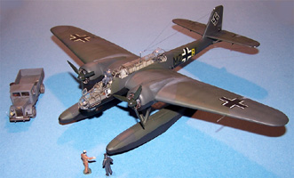

Kit #P7 Collector�s Market Value $15.24
Images and text Copyright � 2005/2006 by Matt Swan
Tsukuda Hobby (Revell) 1/72 Heinkel He-115 C-1
Kit #P7
Collector�s Market Value $15.24
Images and text Copyright � 2005/2006 by Matt Swan
Developmental Background
In 1926 Ernst Heinkel A.G. developed the HD-14 biplane torpedo plane but the aircraft did not fulfill the stipulated requirements. Heinkel improved the design and two were built as HD-16s and shipped to Sweden for trials and modifications in 1928. The aircraft as such did not amount to much and never saw combat but they did allow for Heinkel to gain experience in launching torpedoes from aircraft and this led the development of the He-115 in 1938.
In 1939 twelve Heinkel He-115 A-2 aircraft were delivered to Sweden and six more were delivered to Norway before the outbreak of World War 2. All additional aircraft were manufactured for the Luftwaffe and by 1944 a total of 400 aircraft had been produced. The original aircraft was equipped with the BMW 132 K engines which were license built Pratt and Whitney Hornet engines producing 970 horsepower each. Defensive armament consisted of two 8mm machine guns, one mounted in the nose and the second mounted aft of the pilot. Some later models carried twin machin guns in the aft position. Offensively the aircraft could carry one M/38 or M/41 torpedo or, as an alternative load, two 250 kg bombs. One of the unique features of the He-115 weapons bay was that it had two sets of doors. The aft main doors would suffice for most loads; a torpedo would require the smaller forward doors to accommodate the longer weapon. It carried a crew of three, the pilot, a radio operator/gunner and an observer.
The 115 was a large aircraft with weak defensive armament making it easy prey for Allied fighters. On the plus side it showed itself to be a fairly sturdy aircraft that behaved well on water and in the air. Besides its intended use as a torpedo bomber the aircraft also performed as a smoke screener, mine layer and for long range reconnaissance missions. Between 1938 and 1944 several versions were built seeing a redesigned bomb bay, improved electronics, various structural and float reinforcements and defensive weapons. The C-2 version had reinforced float-planing bottoms for operation on snow and ice (that must have been interesting) and the single 115-D version incorporated two 1,600 hp BMW801C radials, a crew of four and was able to reach a top speed of 248 mph. In the early stages of the German advance across Europe three He-115 A-2 and a single He-115 B-1 fled to Scotland. These received the British serial numbers BV184 to BV187 and were used in clandestine missions into occupied areas. None of the He-115s survived to the present day. As an interesting side note in 1986 a single wreaked aircraft, unit S4+EH, was accidentally discover at a depth of 220 meters during the recovery operations of an oil drilling accident near Haltenbacken. Consideration was given to a recovery attempt but was discontinued due to excessive cost.
The Kit
There are three 1/72 kits of the He-115. In 1972 Airmodel released a vacuform kit that is not worth even starting. Matchbox put one together in 1975 but it suffered from the classic trench sized panel lines and heavy-handed detailing common for the era. The Matchbox kit was also issued under the AMT logo a few years later. In 1977 FROG (Flies Right Off the Ground) was working on a kit for release but never made it beyond the test shot phase before the company collapsed. Revell acquired the FROG package and released it in the late 1970s with the original box art and decals. This kit was issued again by Revell of Germany in 1993. It has also been issued by several Revell subsidiaries in Britain, Spain, Brazil, Mexico, and Japan. The subject of this review is the late 1980 release from Revell of Germany Japanese subsidiary Tsukuda with Satake box art.
Revell released the kit in one of those pesky end opening box but Tsukuda has taken a step forward and replaced this with a classic top opening box, something I prefer in a model. Inside the box we have two large poly bags holding the parts trees. There are four large trees of light gray injection molded pieces that show very fine raised panel lines and recessed control surface lines. The parts are well cast with no visible flash. I cannot find any noticeable injector pin marks or sink holes. When test fitting the primary pieces the fuselage halves went together well but the wing halves gave me some concern. The lower wing panel sets proud of the surface along the outside perimeter. I think the inner surface will need quite a bit of sanding before the pieces will fit well. There is really no interior detail to speak of on this model. There are no instrument panels or flight controls. We get very rudimentary crew seats and figures � that�s it. There is a single small sprue of clear parts that display fine raised frame lines and good clarity.
The clear parts include two variations on the nose section, one for a single MG-151 hand fired machine gun and another that includes a 20mm cannon. The kit advertises itself as a C-1 and this is somewhat confusing based on these two clear nose options and on some other discrepancies. For instance, the kit include FOUR crew figures but all He-115 aircraft with the exception of the single D example were crewed by three. The only example that I could find a record of carrying a nose mounted cannon was the He-115 V5 which was a rebuilt A0, hmmmm. After examining all the various details of the kit and existing records of the He-115 I have come to the conclusion that your best options with this kit are to build any of the A variants or the single D example. All records of C models that I could find showed the unit to carry twin 7.9mm MG-17 machine guns in the aft position. The only other issue I had with the parts was the crew boarding ladders are seriously overdone and should be replaced with PE or hand made wire ladders.
Taking an inventory of parts we have 53 gray plastic pieces and five clear pieces for a total parts count of 58 pieces in the box.
Decals and Instructions
 The instructions on the Tsukuda kit consist of a single long fold-out sheet. It begins with a very brief historical background of the aircraft in four languages; English, Japanese, Dutch and Italian. Following this are seven exploded view construction steps, each with a complete parts list in the four mentioned languages. There are very few color call-outs through here. Next are two panels showing exterior color schemes and decal placement for two aircraft. These two craft are presented as a Luftwaffe night operations craft from France, 1940 and another supposedly operating from Finland in late 1942. The color codes given here are more than useless � no RLM numbers or manufacture paint codes are given.
The instructions on the Tsukuda kit consist of a single long fold-out sheet. It begins with a very brief historical background of the aircraft in four languages; English, Japanese, Dutch and Italian. Following this are seven exploded view construction steps, each with a complete parts list in the four mentioned languages. There are very few color call-outs through here. Next are two panels showing exterior color schemes and decal placement for two aircraft. These two craft are presented as a Luftwaffe night operations craft from France, 1940 and another supposedly operating from Finland in late 1942. The color codes given here are more than useless � no RLM numbers or manufacture paint codes are given.
This boxing of the kit includes two sheets of decals. The first sheet appears to be the standard Revell sheet with markings for two aircraft and no swastikas. Also missing are any service stencils or warning markings. The decals look to be adequately thin with good color density and good print registry. The second sheet is an add-on from Tsukuda that includes the swastikas for this model as well as for several other 1/72 scale Luftwaffe aircraft. Also included here are a set of Finnish markings.
Conclusions
While far from a perfect kit if you want to build a model of the He-115 this is your best bet. The general quality of the parts and decals from a technical point of view is good. The kit has serious accuracy issues for crew and type but that can be fixed. Fit of parts is basically okay with work required in some areas. At one time Extra-Tech made a replacement set of PE ladders for this kit but it is no longer available. Falcon offers a set of replacement canopies in their Vac-Canopy set #7. That is about the extent of aftermarket material produced for this model.
It�s not a terrible model but will need some serious modeling effort to make a descent representation of a Heinkel He-115. I give this kit a fair rating at best.
Construction
3/18/06
We are going to take this kit that I rated as �fair� initially and make it exceptional. To do that we will need to add detail pieces that actually exceed the original kit value. To begin with we need the Extratech Photo Etched package (handled by Squadron) which includes a complete cockpit, bombardier�s station and aft gunner�s station. Many folk are not aware of this detail package but it still is available and will make a world of difference in the model. The Extratech package also includes acetate instrument panels and several instrument boxes that have to be bent to shape. The set also includes replacement boarding ladders and a cover hatch for that central crew position that really should not be there. Having an Omni-visor is a big help when working with PE of this scale and complexity. The only drawback to this detail set is that the kit canopy will hide almost everything so to fix that we will add the Falcon Luftwaffe canopy set #7 (from Great Models) which includes, among other things, a complete replacement set for this bird so now the canopy can be modeled open and the view to the interior is greatly improved.
We are not done yet, the kit engines are basically crap so they will be replaced with some Russian details � I�m talking about engines by Vector (handled by Neomega-Resin) and believe me, you can not find better quality resin engines than these. The detail level is truly exceptional; the engine comes as a kit with separate cylinders that fit perfectly to the crank case mounting holes. They do not include push rods or ignition harnesses but that can be dealt with. All these little extras added $45.00 to the price of this kit and a considerable amount of additional modeling time but it will be worth it in the end.
Construction begins with some destruction, the interior mounting brackets for the kit cockpit need to be removed and the blanked off front area of the fuselage must be cut away. The molded in dashboard is also removed and all interior areas that are reworked are sanded smooth. Now the interior is airbrushed RLM-66 and is set aside. When constructing the PE interior one side of each assembly must not be folded into position until after all painting is completed. The basic cockpit is assembled without the dash, control yoke or seat and painted RLM-02 (yes, I�m using contrasting colors here and you�ll see why later). The dash and seat are assembled and painted, seatbelts are added and instruments are attached with Future Floor Polish. The same approach is used on the aft section with the sliding gunner�s seat being installed after painting. Side instrument boxes are brush painted RLM-66 then washed with some Payne�s Gray which is a very light gray � this settles into the instrument details and gives each panel box some simple depth. The completed seats are installed, the dash is placed and the control yoke goes in then the side panel is folded up and secured with some thin superglue.

At this point the seat is simple resting in place.
At left is a view from the back looking towards the finished dash. Next I will start working on the engines, these things are such works of art that once you open a package it is nearly impossible to put it down until the engine reaches completion so be warned � have at least three or four hours available before you start one of these. I began by airbrushing all the cylinder heads with Model Master Burnt Iron lacquer while still on the pour stub and the crank case was done with Model Master Primer Gray. This is the second time I�ve used the Model Master Lacquers and I am finding these to be very nice paints, easily on par with the Alclad series of metal paints. Oh, by the way, before painting these engine pieces I did go on-line and look up the BMW-132 engine to see what it looked like and how the wiring/plumbing was arraigned. I found several different engines, all 132s, some with a very silvery looking cylinder and some with a more burnt look � I decided to go with the burnt look. The paint dried very quickly and I was able to move forward with construction, each cylinder head was cut from the pour stub with a razor saw, dipped into some superglue and placed in the crank case. Alignment was briefly checked and the next cylinder head went in and so on until all nine were in place � really a very quick assembly. I brushed some accelerator across the crank case, dry brushed some silver across the cylinder heads and started looking into the ignition harness.
I used invisible thread painted white to make the ignition wires, dipping the end of each one into a spot of superglue then attaching it to the spark plug location. This engine used a single wire ignition harness unlike many later war engines that used dual wiring. Once all the wires were in place I started to cut short lengths of medium magnet wire for the push rods. One nice aspect of the Vector crank case is that push rod locations are all marked for you, you just need to cut the material and install it. I did use some two power magnifying glasses while doing this. Once all the push rods were installed I went over them with some flat black paint then touched each end of each rod with some silver. The kit engine nacelles need some work for these new engines to fit; the kit piece had four large alignment pieces that the kit engine would slide over when going in and would also act as alignment points when attaching to the wing. I used a large burr bit on my Dremel to reach inside each nacelle and grind off these pieces leaving just a small tab to attach to the wing. I�ll still need to design some kind of mounting arraignment to hold the new engine in the correct place but that will come later � I still have one engine to build and I can feel it calling me already.
4/29/06
Now that the fuselage interior components are done I can look at closing it up. During preliminary test fitting I found that the fuselage was going to need thinning around the front section to allow for a good fit and this was done with the Dremel and a sanding stone at low speed. The cockpit and aft crew stations were superglued to the left side fuselage wall and test fit again. Just a little more thinning was needed right at the forward bulkhead and everything fit just fine. The pieces were secured with Tenax 7R and the seam was filler with Squadron White putty. After the putty had dried and been sanded I painted it with a good layer of Mr. Surfacer 1000 and sanded it lightly one last time.
Now I can address the wings, one wing went together just fine while the other needed a shim to hold the lower half in alignment with the upper over-lapping piece. Both wings displayed a huge ravine of a seam on the lower surface and this was filled with a healthy application of Squadron putty. After it was sanded smooth the aileron joint was restored by tracing it with the tip of a razor knife. The wings were then glued to the fuselage and required several thin layers of Mr. Surfacer 500 to clean up the resulting seam. I have been using a fair amount of filler but so far it has been very straight forward with no excessive or unusual work involved � all that is about to change.
I have assembled the floats and placed five large lead fishing weights into the nose of each one to prevent the model from sitting on its tail and to give it some feeling of mass when it is picked up. I removed the cross bracing struts from the sprue and spent an evening cleaning up the mold separation lines then went to test fit the pieces. These things don�t fit at all! I tried them in every possible combination and could not get even a reasonable fit at both ends of a single cross strut. Finally out of desperation I attached them to the float then quickly attached the float to the wing. While the glue was still soft I positioned the cross struts in the correct places then tacked them with a spot of superglue. Once the assembly was dry I started layering in Squadron White putty over three days to build up a decent fairing into the fuselage and the float body. This also required a lot of sanding and a final coat of Mr. Surfacer 100o to get a good finish. Personally I don�t think these struts even belong to this kit.
5/29/06
Now that the strut issues have been dealt with I am returning to the engines. The second engine is assembled and detailed then both engines are drilled out. That�s right, drilled out. I cut off the resin crank shaft and placed a dimple in the direct center of the engine with my razor knife then mounted a fine drill bit to my Dremel and bored a pilot hole all the way through the engine. Next I increased the bit size to match some brass rod I had acquired at the local hobby shop and opened the hole up. I changed over to a cut-off wheel on the Dremel and slotted the end of the rod, flared the slotted end and cut off a section to fit the engine thickness � just enough so I would be able to mount the propeller. Now the engines are installed to the nacelles. I found that a few well placed drops of superglue inside the nacelle will hold the engines in place just fine. Now I need to blank off the back side of the nacelle so you cannot see into the wing when checking out the cool engine work. I found that the little white adhesive dots I use to label my paint bottles were just the right size to fit the nacelle so used them as templates on stock plastic sheet to cut out backing plates fro each engine. These were painted flat black and installed. Not only do they block the view into the wing but help to hold the propeller shaft in place so that the propellers can be attached when all painting is complete. Speaking of propellers I am replacing the kit props with metal replacement propellers. This kit is being built on commission and the client has found some nice replacement blades from a shop in the U.K. He has already put all the hard work into the blades cleaning them up and polishing them until they are ready, all I have to do is open the shaft hole a bit and paint them.
Since I have done all this great detail work on the interior I think I would like to be able to see it once the model is complete. The kit clear parts are just not acceptable for this so I have acquired a Falcon canopy set (Luftwaffe #7 set) that includes replacement clear parts for the He-115. Overall these are some very nice pieces with excellent clarity and will allow me to open the cockpit and maybe even some other hatches. One thing about the Falcon set is it covers several aircraft, not just this one subject so now I have replacements for several 1/72 scale kits � a nice little bonus. I have removed the pieces that pertain to this aircraft from the master sheet and started trimming the nose section. So far I have about two hours into it and have two of the five pieces about ready.
7/23/06
The Falcon instructions include images of all the hatches that can be opened within the clear parts and I used this as a reference combined with some on-line images I found of the aircraft taxiing. I removed the navigator�s upper hatch, the pilot�s sliding hatch and the aft gunners cover before allying Future and masking the clear parts. Masking these pieces was quite a challenge not only because there are so many little panels but also due to the scale, I used a 10 power Omni Visor to see what I was doing. After several evenings of making I was able to attach the upper canopy with some clear parts cement. The nose sections were assembled first with some fine spots of superglue and accelerator followed by seam filling with clear parts cement. Once the nose section was attached to the fuselage I stuffed the open hatch with tissue paper then painted the exterior surfaces with RLM-02 prior to filling any seams with putty. This was done so there would be no putty color showing inside the clear sections. I had to fill and sand the connection point twice with Mr. Surfacer 500 before obtaining a satisfactory joint. Remaining hatches and the engine faces were filled with tissue and the model was ready for primer.
 First the entire model is primed with Mr. Surfacer 1200 cut 50% with lacquer thinner then inspected for any defects. A few rough spots got hit with some fine sand paper and the lower surfaces were then coated with Testors Flat Black. While this was drying I mixed some Flat Black with a few drops of Flat White to lighten the color just a little then thinned that mixture with some lacquer thinner. This was applied to the central areas of all the lower panels to create a slight faded look and to help give some definition to the lower surface. The model now rests for a few days for the paint to fully cure.
First the entire model is primed with Mr. Surfacer 1200 cut 50% with lacquer thinner then inspected for any defects. A few rough spots got hit with some fine sand paper and the lower surfaces were then coated with Testors Flat Black. While this was drying I mixed some Flat Black with a few drops of Flat White to lighten the color just a little then thinned that mixture with some lacquer thinner. This was applied to the central areas of all the lower panels to create a slight faded look and to help give some definition to the lower surface. The model now rests for a few days for the paint to fully cure.
Using some 3M wide masking tape I lay strips out on my cutting surface and draw the tip of my Xacto knife down them creating a slight wave pattern on long strips of tape � this is used to mask the floats and the fuselage before upper colors are applied. As this is a naval aircraft I selected RLM 71 and RLM 72 as my upper colors. First the 71 is applied to the entire upper surface and a lightened batch of the same color is used to fade the panel centers. Another day of dry time passes and the upper surface is masked for the 72. Just like the 71, the 72 is first applied then lightened and used over the panel centers and the painting masks are removed.
Yet another day of dry time passes and the model is sealed with Future Floor Polish. This dries for most of a day and the decals are applied. The print registry on the kit decals is not very good so some trimming was needed on the national markings. On the unit badge on the nose you can see just how far off the registry is with that white edge along one side. A good application of Micro Sol made the decals snuggle down nicely but did give me some white clouds on the Future � nothing to worry about though as a follow-up coat of Future fixed this right away. The model now gets another day of dry time before I can start working with a sludge wash.
7/31/06
Using my standard sludge wash the raised panel lines and recessed control seams are traced with a soft round brush and allowed to dry for a few minutes before being wiped down with a damp paper towel. Next the entire model is sealed with a coat of Polly Scale clear flat cut about 30% with Windex. At this point the masks can be removed from the canopy and the tissue can be removed from the open ports. I tried something different this time and had inserted some cotton into the cockpit and bombardier�s station to help protect the delicate interior parts. This was a very bad idea. The cotton got caught on everything and ripped out the navigator�s seat and the pilot�s control yoke. Both these pieces had to be reattached using bent tweezers, a magnifying glass, a flashlight and spots of superglue. Take my advice and don�t use cotton balls for masking material.
I drilled a hole through the canopy for the antenna mast with my Welder�s Tip Drill and installed the mast. The open panels for the canopy were masked, airbrushed with RLM-02 then followed with a coat of RLM-72 before being attached to the model. The front gun barrel is reattached and the aft gun is glued in place. Antenna aerials are made from invisible thread drawn across a black magic marker and attached with fine spots of superglue. Insulators are simply spots of superglue painted white. Some gray chalk is ground and applied with an eye shadow swab for exhaust staining above and below the wing. At last the propellers are fixed to the shafts with a few judiciously placed spots of superglue and this model is ready to ship to the Major � hope he likes it.

You may click on any of these small images to view larger pictures
This was a fun build but there were a couple aspects of the kit I did not like;
1. The float struts were totally not designed for this kit and took massive amounts of putty to get blended in.
2. The clear parts are about as thick as the bottom of old fashion coke bottles and must be replaced, fortunately the Falcon set is still around and remedies this problem.
3. The interior basically sucks. If you plan on looking inside this when complete you�ll want to add that Extratech PE set.
4. The kit decals are not very good for print registry and should be replaced. No aftermarket set exists for this specific kit but I�m sure something could be scrounged.
5. It would have been nice if the kit included a beaching dolly.
Even though this kit starts at an attractive $15.00 by time you add the canopy set and interior set you�ll be looking at an easy $45.00 to $50.00 before you even start cutting plastic but is that really a lot to pay for a quality model? How often do we find ourselves paying that much or more for a contemporary production kit that still does not include the level of detail obtained with this package, not to mention the chances of finding this one sitting on your buddy�s model shelf are slim.


{kind=link}
{kind=link}
{kind=link}
{kind=link}
{kind=link}
{kind=link}
{kind=link}
{kind=link}
{kind=link}
{kind=link}
{kind=link}
{kind=link}
{kind=link}
{kind=link}
{kind=link}
{kind=link}
{kind=link}
{kind=link}